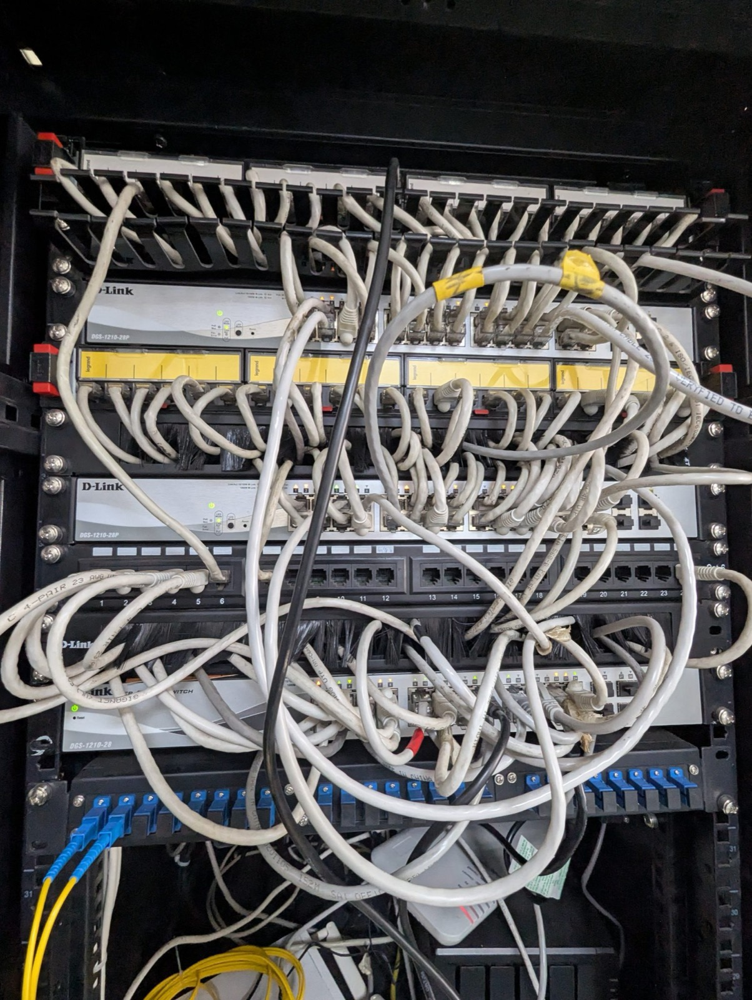
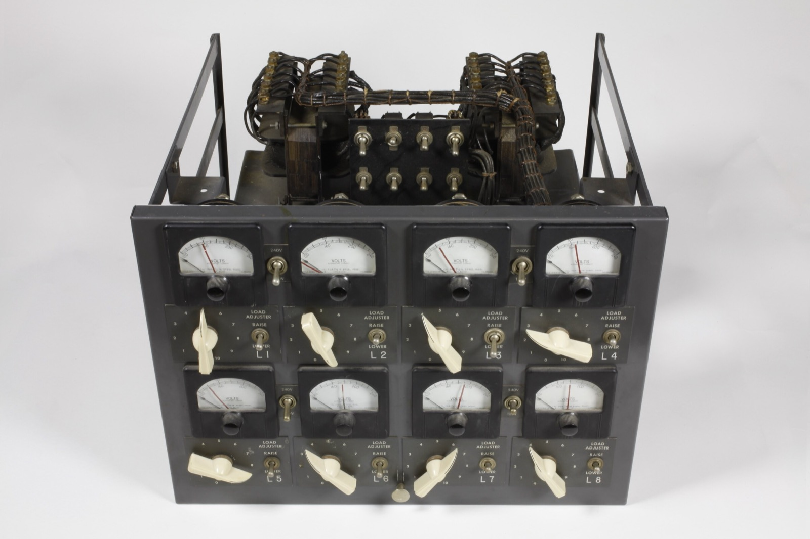
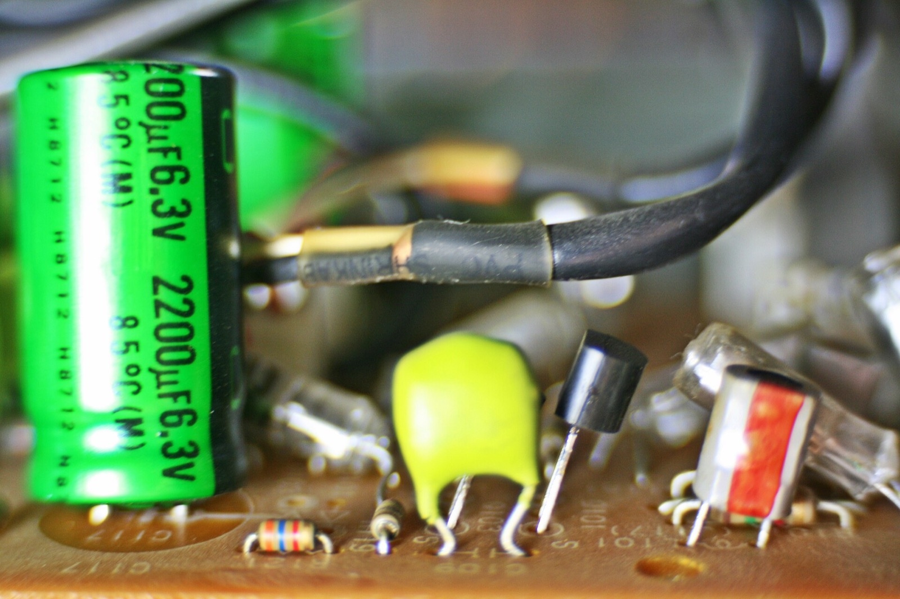

Rewire the cloud
An AI agent on Google ADK and Gemini that reads an AWS repo, wires every service it can prove to Google Cloud, and writes the Terraform.
% invented resources, against % without its tools, across apps.
Moved by hand
In 1947 Arnhem’s operators still patched every call by hand, until the exchange went automatic. Cloud migrations are mostly still patched by hand. MigrateLens moves only the wires it can trace to a line of code.

Seven real apps
Pick one. The board rewires from its recorded run. Hover a pin for its evidence.
The gate
First the repo lands, read-only.
Then every service needs a line of code.
Then the guardrail checks each name.
Then it ships the plan, or refuses.
Invented resources
%
In first drafts, across apps ( public AWS samples, synthetic). The same Gemini model with the repo pasted in and no tools: %. That baseline still found more services: recall % against %.

From eval/results, human-reviewed ground truth, 19 Nov 2026. of plans verified; Terraform validated on of , never deployed.
